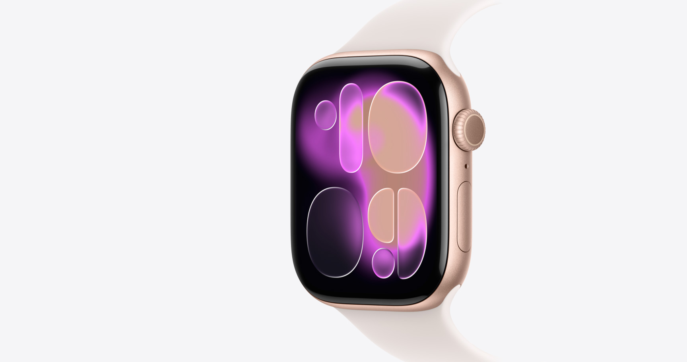
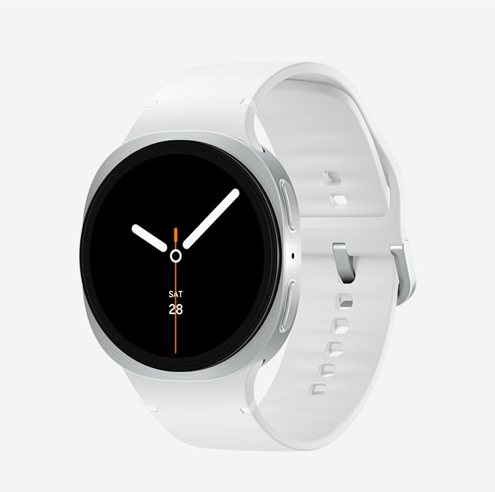
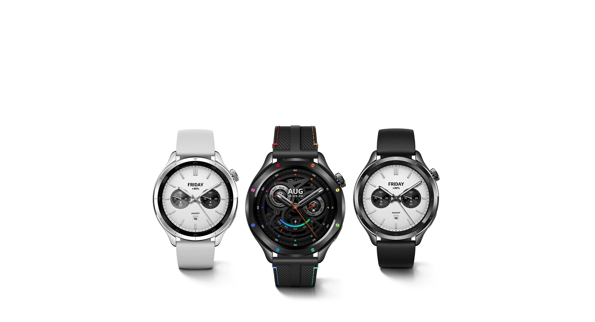

Apple Watch serie 11

Tecnología inteligente para tu día a día.

Una gran forma de cuidar tu salud.Mientras más datos tengas, más poder tienes para cuidarte. Desde la app ECG hasta la app Signos Vitales, el Apple Watch Series 11 te muestra un panorama más completo sobre tu salud para contar siempre con la información que necesites. Y ahora, el Series 11 da un gran salto en salud cardiaca con una innovadora funcionalidad: notificaciones de hipertensión.La hipertensión, o presión arterial alta, afecta a más de 1,300 millones de adultos en todo el mundo y es una de las principales causas de ataques cardiacos, accidentes cerebrovasculares y enfermedades renales. En muchos casos no se diagnostica porque no suele tener síntomas. E incluso puede pasar inadvertida durante una consulta médica si se hace una sola medición.Despierta con tu Puntuación de Sueño. La calidad del sueño depende de diversos factores, como cuánto duermes, a qué hora te vas a dormir, las veces que te despiertas y el tiempo que pasas en cada fase del sueño. Cada noche, la funcionalidad Puntuación de Sueño analiza estos datos y les otorga una clasificación y un puntaje para ayudarte a comprender la calidad de tu sueño y cómo hacerlo más reparador.Con el Apple Watch Series 11 tus entrenamientos no tienen límites, lo mismo si te estás preparando para correr un maratón o simplemente quieres superar tu propia marca en la piscina. Y como usa métricas útiles para seguirte en todos tus movimientos, podrás optimizar cada sesión y maximizar tu rendimiento.El nuevo diseño con cuatro botones en las esquinas te permite acceder directamente a las funcionalidades que más usas, como Ritmo, Ruta de la Carrera y Entrenamiento Personalizado.

Máximo confort, desde el descanso hasta el entrenamiento.El Samsung Galaxy Watch más delgado hasta la fecha, el Galaxy Watch8, está listo para causar sensación. Ahora, se ha reinventado con audacia, desde el nuevo e icónico diseño de almohadilla hasta el sistema Dynamic Lug System para un ajuste cómodo y ceñido, todo ello mientras se ejecuta con potencia con el procesador de 3 nm. Experimente el coaching proactivo, desde el sueño hasta correr y la salud holística, que fusiona inteligencia con individualidad. Aprovecha al máximo tus momentos con Galaxy AI que te mantiene por delante, coronada con una experiencia One UI totalmente nueva.presentamos el Galaxy Watch8, con un nuevo y atrevido diseño, creado con innovación. Las líneas elegantes que fluyen desde la esfera hasta el cuerpo delgado crean una estética refinada, mientras que el icónico diseño acolchado añade un toque distintivo, completando un look creado para dejar una impresión duradera. Disponible en 40 mm y 44 mm, en Graphite y Silver.Disfrutá de tu día con mayor comodidad. Con el Dynamic Lug System, el Galaxy Watch8 se asienta más cómodamente en tu muñeca, quedando pegado a la piel con un espacio mínimo entre ambos. Este diseño refinado mejora la estabilidad, lo que da como resultado un ajuste cómodo y estable que apenas se nota. Disfruta más de tu día con la experiencia Galaxy Watch más cómoda que jamás hayas tenido.Descubre si vas por buen camino para envejecer bien con Galaxy Watch8, el primer reloj inteligente del mundo que mide tu nivel de antioxidantes. Coloca el pulgar sobre el sensor para medir los niveles de carotenoides en tu piel y comprueba si tu dieta y tu estilo de vida actuales son saludables. Comprueba tu índice antioxidante para mejorar tu bienestar y reducir el riesgo de enfermedades.

Pantalla deslumbrante y claridad excepcional.Incorpora una gran pantalla AMOLED de 1.43" que ofrece imágenes nítidas y fluidas, con un impresionante brillo HBM de hasta 1500 nits.Una batería de hasta 15 días* te ofrece más de 2 semanas de uso, para que no tengas que llevar el cargador en viajes cortos.5 minutos de carga rápida brindan 2 días de uso. Carga tu reloj mientras te duchas o te cepillas los dientes. La corona giratoria mejorada ofrece una experiencia táctil refinada. Gira para acceder rápidamente a widgets y previsualizar mensajes, mejorando la eficiencia de lectura. Marco de aleación de aluminio con un acabado brillante similar al acero inoxidable, producido mediante un proceso PVD.El Xiaomi Watch S4 se inspira en los relojes tradicionales y ofrece una variedad de biseles icónicos e intercambiables, elaborados con materiales de alta calidad que reflejan estilos únicos y creativos. Monitorea frecuencia cardíaca, estrés, oxígeno en sangre y sueño. Un informe de examen físico rápido se genera en aproximadamente 60 segundos.La combinación de un módulo de monitoreo de frecuencia cardíaca de alta precisión y un algoritmo propio mejora la precisión del monitoreo en el reloj hasta un 98%*. Más de 150 modos deportivos, ideal para todo tipo de actividades. El chip GNSS de doble frecuencia ofrece una ubicación precisa a través de cinco sistemas satelitales para registrar rápidamente actividades al aire libre.